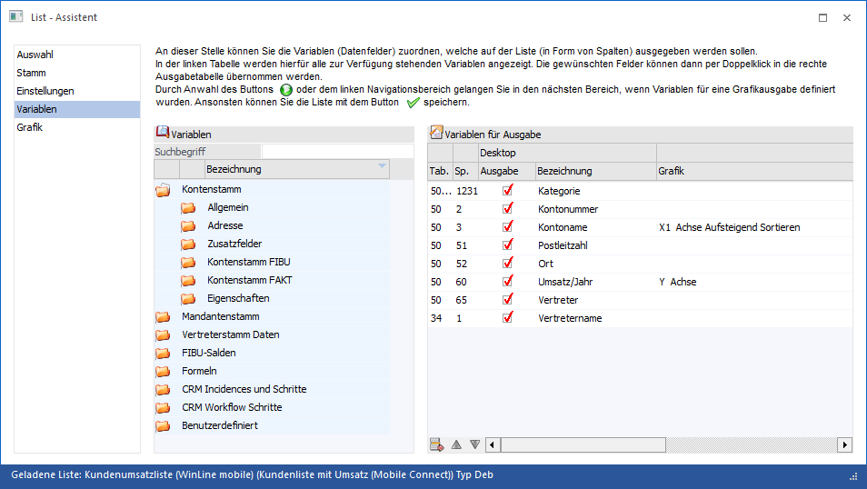
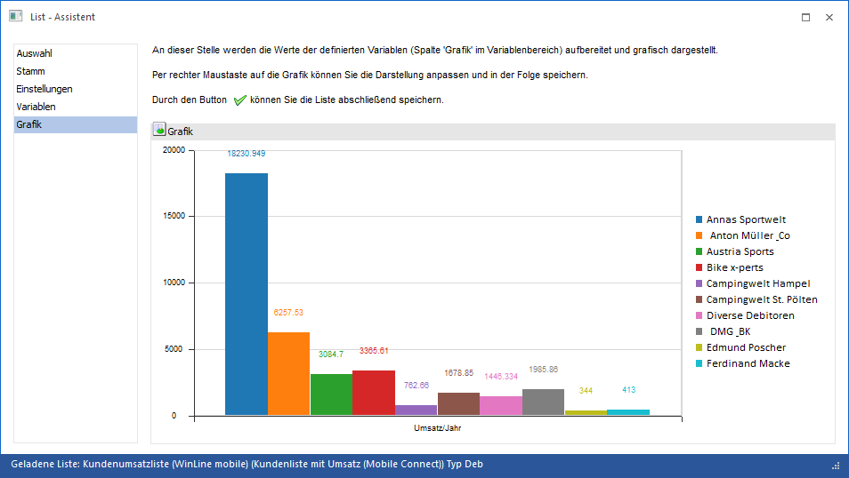
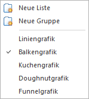

Im Bereich "Grafik" kann eine Auswertung in Form einer Grafik angezeigt werden, wenn im Bereich "Variablen" die entsprechenden Einstellungen vorgenommen wurden. Diese Einstellung ist in weiterer Folge auch für den Einsatz der Power Reports von Bedeutung.
Beispiel
Definition einer Grafik im Bereich "Variablen":

Ergebnis im Bereich Grafik:

Der Werte, der in der X-Achse definiert ist, wird in diesem Fall als Legende auf der rechten Seite angezeigt. Die Y-Achse wird als Unterschrift dargestellt. Wenn mehrere Werte als Y-Achse definiert werden, wird die Y-Achse als Legende verwendet, und die X-Achse dann als Unterschrift.
Standardmäßig wird die Grafik als Balkendiagramm ausgegeben, über die rechte Maustaste können aber die Art der Grafik und sonstige Einstellungen vorgenommen werden.

Die Grafik kann in weiterer Folge z.B. auch als Hintergrundprozess in OIF-Formulare oder aber in das Cockpit eingebaut werden.